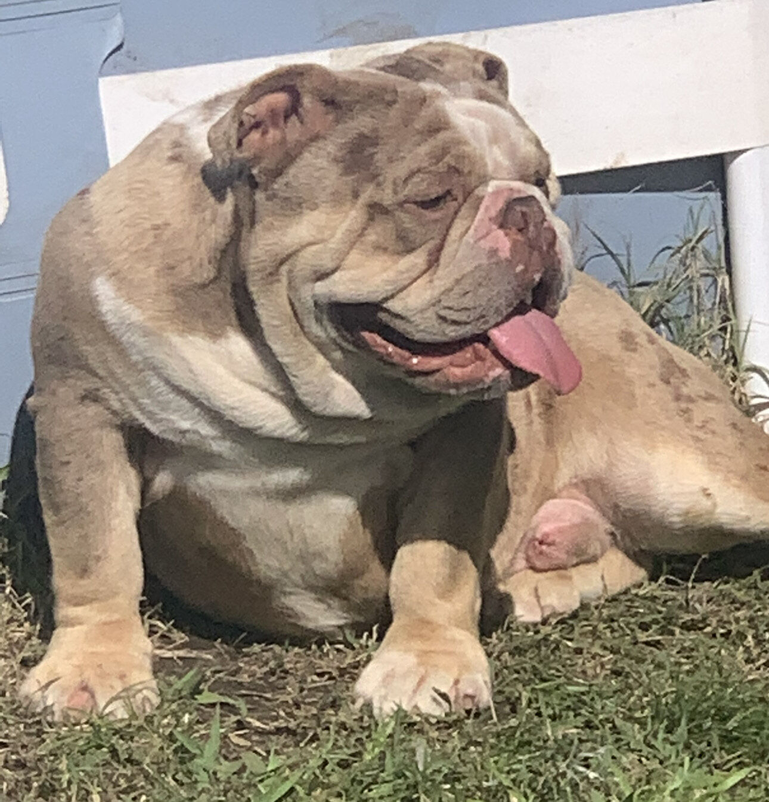
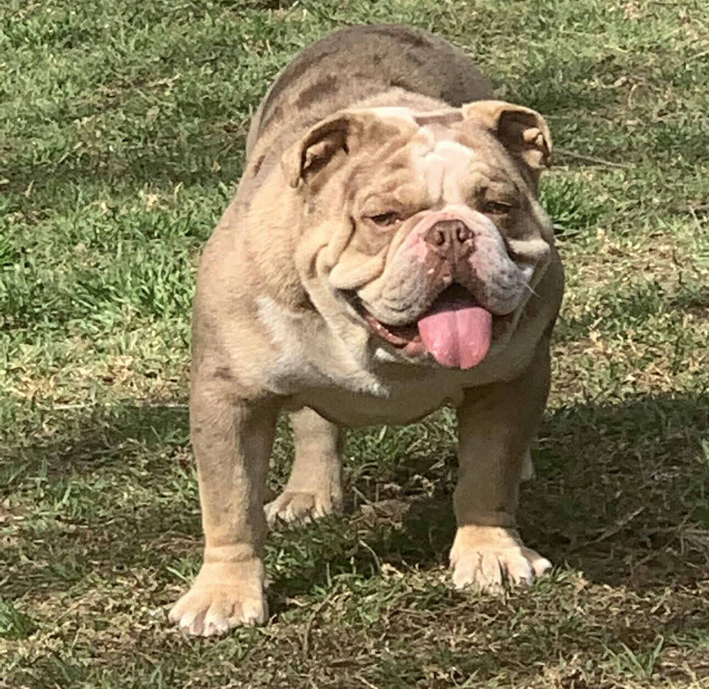
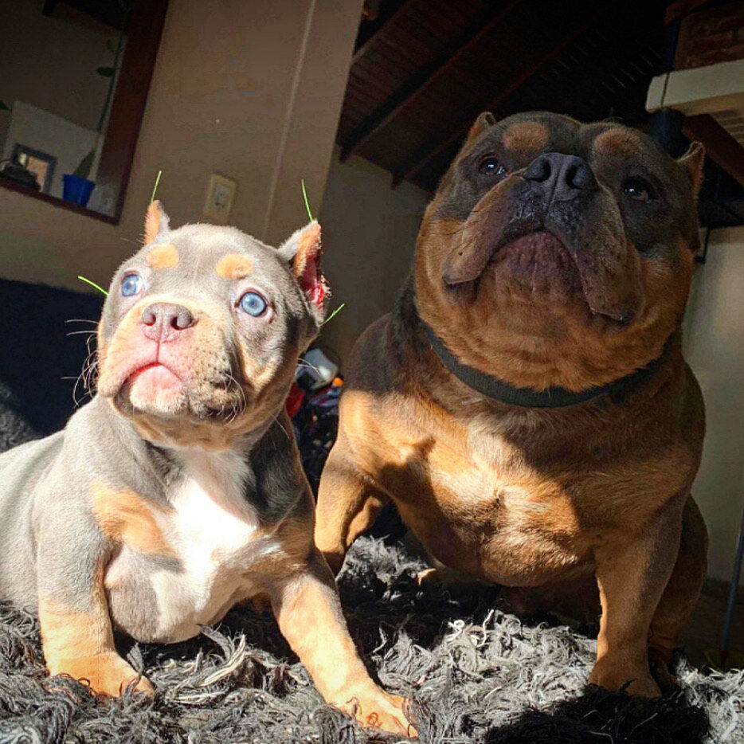

Somos una prestigiosa institución dedicada a la cría de perros Bully, Bulldog Inglés y Bulldog
Francés.
Con más de 300 perros entregados, nos enorgullecemos de mantener altos estándares de salud y
brindar un excelente servicio de postventa.
La higiene y el bienestar de nuestros perros son nuestra prioridad. Criamos a nuestros cachorros
en un entorno limpio y seguro,
y promovemos una cultura de calidad a través de programas de socialización y entrenamiento.
¡Descubrí la diferencia con nosotros!
El Bully es una raza de perro poderosa y leal, conocida por su aspecto robusto y musculoso.
Nuestros Bullys son criados con dedicación y cuidado, garantizando su salud y bienestar.
Recomendamos una socialización temprana y un entrenamiento adecuado para fomentar su buen
temperamento y comportamiento equilibrado.
¿Los perros Bully son agresivos?
Los perros bully, como los pitbulls, pueden representar un peligro para las personas y otros animales
si no son educados correctamente. Si se les entrena para ser agresivos o si se les maltrata, pueden
convertirse en una amenaza. No obstante, esto no implica que todos los perros bully sean peligrosos
por naturaleza. En general, son leales y afectuosos si se les trata adecuadamente.
¡La educación temprana es lo más importante!
Es fundamental educar a un perro bully desde temprana edad para prevenir problemas de conducta en el
futuro. Los dueños deben socializar al animal con otros seres y establecer límites
claros, mientras brindan un entrenamiento positivo que refuerce los buenos
comportamientos.
Los perros bully pueden ser una amenaza si son adiestrados para ser agresivos o si son maltratados.
Con una educación temprana y adecuada, pueden convertirse en fieles y cariñosos compañeros.
¡Confiá en Royal Jaw para tener los mejores y más seguros perros Bully del mundo!
El Bulldog Inglés es una raza de perro originaria de Gran Bretaña, conocida por su cuerpo
fornido y cabeza grande y arrugada. Aunque puede ser una mascota maravillosa, como cualquier raza,
hay ciertos problemas de salud comunes que deben tenerse en cuenta antes de decidirse por uno.
La Salud del Bulldog Inglés
Una de las principales preocupaciones de los dueños de Bulldog Inglés es su salud
respiratoria.
Debido a su cabeza grande y achatada, los Bulldogs tienen una estructura facial única que a menudo
los hace propensos a problemas respiratorios. También son conocidos por tener problemas de piel,
como dermatitis, alergias y infecciones.
¡Excelentes Mascotas!
A pesar de estos problemas de salud, los Bulldogs tienen muchas ventajas como mascotas. Son
conocidos
por ser cariñosos y leales a sus dueños, y por su naturaleza tranquila y relajada. Debido a su
tamaño moderado, pueden adaptarse fácilmente a la vida en apartamentos o casas más pequeñas.
La Genética es Primordial. Confiá en Royal Jaw
Lo más importante cuando se trata de Bulldogs es asegurarse de que provengan de una buena genética y
hayan sido criados y cuidados adecuadamente desde el momento de su nacimiento. Deben ser alimentados
con una dieta saludable y equilibrada, y deben recibir atención veterinaria regular para detectar
cualquier problema de salud temprano.

Educación Temprana. Perros Obedientes. La especialidad de Royal Jaw.
Es fundamental comenzar el entrenamiento del Bulldog Inglés desde una edad temprana. Con su
naturaleza
tranquila y relajada, pueden ser propensos a la obesidad si no se les da suficiente ejercicio. El
entrenamiento también puede ayudar a evitar comportamientos no deseados, como masticar o saltar.
En Royal Jaw tenemos el Bulldog que te va a hacer feliz!
El Bulldog Inglés es una raza de perro maravillosa que puede ser una gran mascota para las personas
adecuadas. Sin embargo, es importante recordar que requieren atención y cuidado adecuados para
mantener su salud y felicidad a largo plazo. Al elegir un Bulldog Inglés, asegúrese de que provenga
de una buena genética y que haya sido criado y cuidado adecuadamente desde el principio.
Tu Bulldog Inglés te espera en Royal Jaw

¡Entregados!
Desde nuestro criadero, hemos logrado entregar más de 300 perros a familias amorosas y
responsables.
Cada uno de ellos ha sido cuidado con mucho amor y profesionalismo para asegurarnos de que estén en
las mejores condiciones físicas y emocionales posibles.
En Royal Jaw sentimos muy orgullosos de poder decir que todos los perros que entregamos están
completamente sanos y vacunados. Además, todos ellos han recibido el amor y atención que merecen y
necesitan, y ahora están en hogares que los quieren y los cuidan como si fueran de su propia
familia.
Para nosotros, ver las fotos y videos de los perros que entregamos siendo felices junto a sus
familias es una alegría indescriptible. Sabemos que estos animales siempre van a estar acompañados y
que van a tener todo lo que necesitan para ser felices y saludables.
Queremos agradecer a todos aquellos que nos han apoyado en esta labor, a las personas que han
adoptado a uno de nuestros
perros y a todos aquellos que nos ayudan a seguir adelante. Este logro es de todos, y juntos
seguiremos trabajando para
poder encontrar hogares amorosos para cada uno de los perros que criamos, con técnica, conocimiento
y dedicación.
Gracias por ayudarnos a hacer de este mundo un lugar mejor para los animales!
El Bulldog Francés, también conocido como "Frenchie", es una raza canina muy popular en todo el
mundo por su aspecto tierno y su carácter amistoso. Se trata de un perro de tamaño pequeño a
mediano, compacto y musculoso, que se destaca por su cabeza grande y sus orejas erectas. El Frenchie
es un perro muy sociable y juguetón, ideal para las familias con niños, ya que se lleva bien con
otros perros y mascotas en el hogar.
Sin embargo, es importante destacar que una buena crianza es fundamental para el desarrollo adecuado
de la raza. Los Bulldogs Franceses son perros inteligentes y se pueden entrenar fácilmente, pero
también pueden ser testarudos y obstinados en ocasiones. Por lo tanto, es importante tener paciencia
y ser consistentes en su entrenamiento, utilizando siempre un enfoque positivo y recompensas.
Además, los Bulldogs Franceses son propensos a una serie de problemas de salud, incluyendo problemas
respiratorios y de columna vertebral, entre otros. Por lo tanto, es fundamental que los dueños de
estos perros les brinden una atención médica adecuada y los lleven a chequeos regulares con el
veterinario.

Una buena crianza también implica proporcionarles una actividad física adecuada y una dieta
equilibrada para evitar problemas de salud y lesiones. Los Bulldogs Franceses son perros enérgicos y
necesitan un ejercicio regular para mantenerse saludables.
La importancia de una buena crianza es esencial para garantizar la salud y el bienestar
del Bulldog Francés. Al proporcionarles un ambiente seguro y amoroso, una alimentación
adecuada,
ejercicio regular y atención médica, los Bulldogs Franceses pueden convertirse en mascotas
maravillosas y leales que traerán mucha felicidad a cualquier hogar.
Sobre Nosotros
¡Bienvenido a nuestro criadero de perros Bully y Bulldog! Nos especializamos en criar estas razas,
siguiendo altos estándares para asegurarnos de que nuestros cachorritos sean los mejores. En nuestra
institución, la higiene y la disciplina son fundamentales, brindando un adiestramiento de primer
nivel para que los cachorritos sean educados y sociables desde pequeños.
Nos enorgullecemos de entregar perros sanos y felices a nuestros clientes, que han pasado por
rigurosos controles veterinarios para garantizar su bienestar. Nuestro equipo de cuidadores
altamente capacitados se dedica a brindar el mejor cuidado posible a nuestros perros, asegurándonos
de que estén en óptimas condiciones de salud.
En nuestro criadero, creemos en la transparencia y la honestidad. Ofrecemos un servicio de
posventa y un seguimiento de por vida para asegurarnos de que nuestros cachorritos se
adapten perfectamente a sus nuevos hogares. Además, contamos con los siguientes beneficios:
Cachorros criados con amor, cuidado y dedicación.
Experiencia excepcional y atención personalizada.
Información detallada y asesoramiento para tomar una decisión informada.
Garantía de salud y bienestar de nuestros perros.
Podés confiar en nosotros para obtener los mejores cachorritos de Bully y Bulldog. Estamos
comprometidos en brindarte una experiencia única y asegurarnos de que tu nuevo cachorrito se
convierta en el compañero perfecto para tu hogar. ¡Contactanos hoy mismo para obtener más
información sobre nuestros servicios y nuestros increíbles cachorritos!
Testimonios
Más de 300 perros ya hicieron felices a miles de personas en Argentina, Chile y Uruguay!
¡Te presentamos con orgullo a nuestros nuevos cachorritos de Bulldog Inglés! Son el resultado
de mucho esfuerzo y dedicación, criados con los más altos estándares de calidad. Nuestros cachorros
son alimentados con lo mejor, provenientes de padres de primera calidad, cuidadosamente
seleccionados para asegurar su salud y bienestar. Además, te ofrecemos soporte de por vida para que
siempre cuentes con nuestra compañía y asesoramiento.
Vení a conocer a estos pequeños campeones, llenos de vitalidad y cariño. Te garantizamos que
te enamorarás de su belleza y personalidad excepcional. No esperes más para tener a un Bulldog
Inglés de primera en tu hogar. Te esperamos con entusiasmo para que descubras la calidad y el
compromiso que ponemos en cada uno de nuestros cachorros. ¡Te van a encantar!
Te esperamos con los brazos abiertos para que descubras la felicidad que un Bulldog Inglés puede
traer a tu hogar. Nuestros cachorros son el resultado de años de dedicación y experiencia en
la cría de esta raza. Te ofrecemos un servicio de soporte de por vida, para que siempre cuentes con
nuestra ayuda y asesoramiento. ¡Vení a conocer a nuestros cachorritos y descubrí la diferencia de
tener un Bulldog Inglés de calidad en tu vida!
Consejos
Paseo Diario
¿Por qué tu perro necesita salir a pasear?
✔️ Sacarlo a pasear diariamente le proporciona el ejercicio físico y mental que necesita. Va
mucho más allá de sus necesidades fisiológicas de hacer pis y caca. Los beneficios para la salud
física y mental de tu perro son más de lo que te imaginas.
¿Qué tengo que tener en cuenta?
✔️ Tomá nota de las siguientes recomendaciones:
Asegurate de que tu perro salga de casa en un estado relajado.
Permitile explorar el entorno con libertad: aunque lo pasees con correa, dejalo oler.
Llevalo a lugares que le gusten.
Si tu perro se lleva bien con otros perros, dejale jugar y socializarse con ellos.
Contacto
Comunicate con nosotros!
Estamos siempre listos para recibirte y que vengas a conocer a tu nuevo perro!
Estamos ubicados en Grand Bourg, Provincia de Buenos Aires.
Cerca del Tortugas Mall, zona Norte de Buenos Aires.
A solo 25 minutos de San Isidro/Vicente López y 40 minutos de CABA.